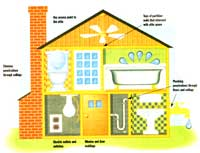
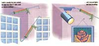

Energy Tips
Tips for making around-the-house adventures with your caulking gun more effective.
The yearly ritual begins in September. The old caulking gun emerges from its hiding place in the shed, is cleaned off, and does its rounds at the edges of windows and doors. An hour later and you're buttoned up for the winter. Well, not exactly. As good an idea as sealing your windows and doors is, taking aim at a few more trouble spots around the house will make your efforts much more effective. And because you're not constantly opening and closing the sources of air leaks listed below, once you get 'em, you've got 'em.
Common Sources of Air Leaks
-Plumbing penetrations through insulated floors and ceilings
-Chimney penetrations through insulated ceilings and exterior walls
-Gaps along the sill plate and band joist at the top of foundation walls
-Fireplace dampers
-Attic access hatches
-The tops of interior partition walls where they intersect with the attic space
-Recessed lights and fans in insulated ceilings
-Wiring penetrations through insulated floors, ceilings, and walls
-Missing plaster
-Electrical outlets and switches, especially on exterior walls
-Window, door, and basement moldings
-Dropped ceilings above bathtubs and bathroom cabinets
- Kneewalls in finished attics, especially at access doors and built-in cabinets and bureaus.
Choosing proper sealant depends on the size of the gaps and where they are located. Caulk is best for cracks less than 1/4" wide. Read the label carefully to make sure that the caulk is suitable for the material to be sealed. Look for brands which remain flexible over a 20-year lifetime. If the joint will be visible, choose a paintable caulk.
Expanding foam sealant is an excellent material to use for larger cracks. Some brands are not effective when exposed to sunlight or moisture, so be sure to buy the right type for your job. If possible, buy foam sealant without ozone depleting chlorofluorocarbons, or CFCs.
Backer rod or crack filler is a round, flexible foam material available in diameters of 1/4" to 1". It is usually sold in long coils and is great for sealing large cracks and as a backing for deep cracks sealed with caulk
Use rigid foam insulation for sealing very large openings such as plumbing chases and attic hatch covers. Fiberglass insulation can also be used for sealing large holes, but it will work better if it is stuffed in plastic bags. Don't use plastic in areas that reach high temperatures, and always wear gloves and a mask when working with fiberglass.
From Consumer's Guide to Home Energy Savings (1991), published by the American Council for an Energy Efficient Economy (ACEEE). For more information, write to: ACEEE, 2140 Shattuck Avenue #202, Berkeley, CA 94704.
|
 |
 |
|